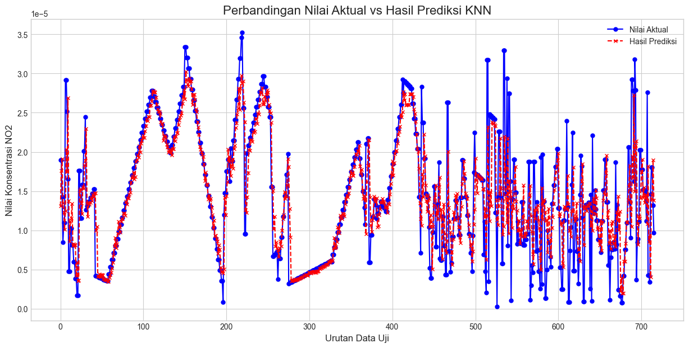
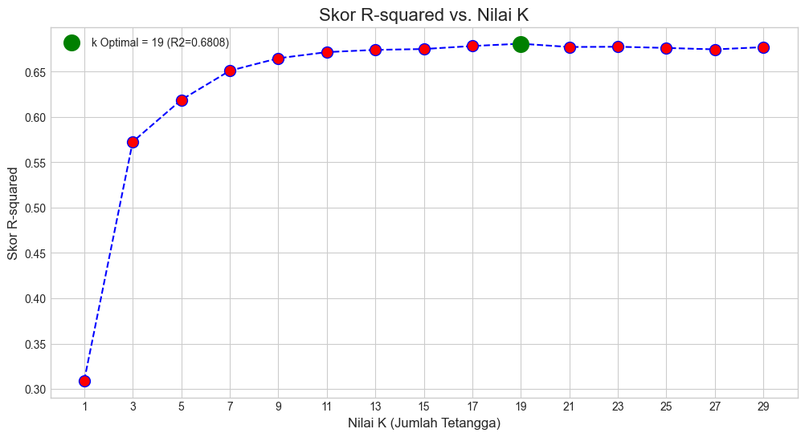

Project Time Series with AutoCorrelation#
import pandas as pd
import matplotlib.pyplot as plt
import seaborn as sns
import numpy as np
from sklearn.preprocessing import MinMaxScaler
from sklearn.neighbors import KNeighborsRegressor
from sklearn.metrics import mean_absolute_error, mean_squared_error, r2_score
Read Dataset#
file_path = "dataset/NO2-dataset/NO2_in_Lenteng(5 tahun).csv"
Data Understanding#
df = pd.read_csv(file_path)
print(df.head(10))
t x y crs NO2
0 2020-10-19 113.77659 -7.020542 b'' NaN
1 2020-10-19 113.77659 -7.055264 b'' NaN
2 2020-10-20 113.77659 -7.020542 b'' NaN
3 2020-10-20 113.77659 -7.055264 b'' NaN
4 2020-10-21 113.77659 -7.020542 b'' NaN
5 2020-10-21 113.77659 -7.055264 b'' NaN
6 2020-10-22 113.77659 -7.020542 b'' NaN
7 2020-10-22 113.77659 -7.055264 b'' NaN
8 2020-10-23 113.77659 -7.020542 b'' NaN
9 2020-10-23 113.77659 -7.055264 b'' NaN
print('Informasi Dasar Dataset')
print(df.info)
Informasi Dasar Dataset
<bound method DataFrame.info of t x y crs NO2
0 2020-10-19 113.77659 -7.020542 b'' NaN
1 2020-10-19 113.77659 -7.055264 b'' NaN
2 2020-10-20 113.77659 -7.020542 b'' NaN
3 2020-10-20 113.77659 -7.055264 b'' NaN
4 2020-10-21 113.77659 -7.020542 b'' NaN
... ... ... ... ... ...
3615 2025-10-16 113.77659 -7.055264 b'' 1.462123e-05
3616 2025-10-17 113.77659 -7.020542 b'' -3.795632e-07
3617 2025-10-17 113.77659 -7.055264 b'' 1.804137e-05
3618 2025-10-18 113.77659 -7.020542 b'' 1.320828e-05
3619 2025-10-18 113.77659 -7.055264 b'' 9.687136e-06
[3620 rows x 5 columns]>
print('Statistik Deskriptif')
print(df.describe())
print()
print('Jumlah Missing Value')
print(df.isnull().sum())
Statistik Deskriptif
x y NO2
count 3.620000e+03 3620.000000 1656.000000
mean 1.137766e+02 -7.037903 0.000011
std 4.263845e-14 0.017364 0.000009
min 1.137766e+02 -7.055264 -0.000024
25% 1.137766e+02 -7.055264 0.000005
50% 1.137766e+02 -7.037903 0.000012
75% 1.137766e+02 -7.020542 0.000018
max 1.137766e+02 -7.020542 0.000042
Jumlah Missing Value
t 0
x 0
y 0
crs 0
NO2 1964
dtype: int64
# 3. VISUALISASI HASIL
# ==============================================================================
plt.style.use('seaborn-v0_8-whitegrid') # Mengatur style grafik agar lebih bagus
plt.figure(figsize=(15, 7)) # Mengatur ukuran gambar
# Plot data asli (akan terlihat putus-putus di bagian yang kosong)
plt.plot(df.index, df['NO2'],
marker='o', linestyle='--', color='red', label='Data Asli (dengan Missing Value)')
# Memberi judul dan label
plt.title('Data NO₂ Asli', fontsize=16)
plt.xlabel('Tanggal', fontsize=12)
plt.ylabel('Konsentrasi NO₂ (mol/m²)', fontsize=12)
plt.legend()
plt.tight_layout()
# Menampilkan grafik
plt.show()
C:\Users\MyBook Z Series\AppData\Local\Temp\ipykernel_3076\22787649.py:15: UserWarning: Glyph 8322 (\N{SUBSCRIPT TWO}) missing from current font.
plt.tight_layout()
D:\Perkuliahan\Semester 5\Poyek Sains Data\PSD-2\venv_py3.11\Lib\site-packages\IPython\core\pylabtools.py:170: UserWarning: Glyph 8322 (\N{SUBSCRIPT TWO}) missing from current font.
fig.canvas.print_figure(bytes_io, **kw)
Data Preprocessing#
# Mengubah Kolom date
df['t'] = pd.to_datetime(df['t'])
# Menghapus Kolom tidak berguna
df_cleaned = df.drop(columns=['x', 'y', 'crs'])
print(df_cleaned)
t NO2
0 2020-10-19 NaN
1 2020-10-19 NaN
2 2020-10-20 NaN
3 2020-10-20 NaN
4 2020-10-21 NaN
... ... ...
3615 2025-10-16 1.462123e-05
3616 2025-10-17 -3.795632e-07
3617 2025-10-17 1.804137e-05
3618 2025-10-18 1.320828e-05
3619 2025-10-18 9.687136e-06
[3620 rows x 2 columns]
# Koreksi nilai negatif menjadi NaN (agar dianggap sebagai data hilang)
df_cleaned.loc[df_cleaned['NO2'] < 0, 'NO2'] = np.nan
print("Jumlah missing value setelah nilai negatif diubah menjadi NaN:")
print(df_cleaned.isnull().sum())
Jumlah missing value setelah nilai negatif diubah menjadi NaN:
t 0
NO2 2132
dtype: int64
Interpolasi Missing Value#
# Jadikan kolom waktu ('t') sebagai index.
df_cleaned.set_index('t', inplace=True)
# Lakukan interpolasi dengan metode 'time'
df_interpolated = df_cleaned.interpolate(method='time')
# Kembalikan index 't' menjadi kolom biasa jika diperlukan nanti
df_interpolated.reset_index(inplace=True)
print('Jumlah Missing Value setelah interpolasi')
print(df_interpolated.isnull().sum())
print(df_interpolated.head())
Jumlah Missing Value setelah interpolasi
t 0
NO2 10
dtype: int64
t NO2
0 2020-10-19 NaN
1 2020-10-19 NaN
2 2020-10-20 NaN
3 2020-10-20 NaN
4 2020-10-21 NaN
# 3. VISUALISASI HASIL
# ==============================================================================
plt.style.use('seaborn-v0_8-whitegrid') # Mengatur style grafik agar lebih bagus
plt.figure(figsize=(15, 7)) # Mengatur ukuran gambar
# Plot data asli (akan terlihat putus-putus di bagian yang kosong)
plt.plot(df_interpolated.index, df_interpolated['NO2'],
marker='o', linestyle='--', color='red', label='Data Asli (dengan Missing Value)')
# Plot data yang sudah diinterpolasi (garisnya akan menyambung)
plt.plot(df_interpolated.index, df_interpolated['NO2'],
marker='x', linestyle='-', color='blue', label='Data Hasil Interpolasi')
# Memberi judul dan label
plt.title('Perbandingan Data NO₂ Asli dan Hasil Interpolasi', fontsize=16)
plt.xlabel('Tanggal', fontsize=12)
plt.ylabel('Konsentrasi NO₂ (mol/m²)', fontsize=12)
plt.legend()
plt.tight_layout()
# Menampilkan grafik
plt.show()
C:\Users\MyBook Z Series\AppData\Local\Temp\ipykernel_3076\2466481591.py:19: UserWarning: Glyph 8322 (\N{SUBSCRIPT TWO}) missing from current font.
plt.tight_layout()
D:\Perkuliahan\Semester 5\Poyek Sains Data\PSD-2\venv_py3.11\Lib\site-packages\IPython\core\pylabtools.py:170: UserWarning: Glyph 8322 (\N{SUBSCRIPT TWO}) missing from current font.
fig.canvas.print_figure(bytes_io, **kw)
Memproses Data Outliers#
Sebelum Memproses Outliers#
print("## 1. Menganalisis Outlier dengan Metode IQR ##")
# Ambil kolom target untuk dianalisis
kolom_target = 'NO2'
data_kolom = df_interpolated[kolom_target]
# Hitung Q1, Q3, dan IQR
Q1 = data_kolom.quantile(0.25)
Q3 = data_kolom.quantile(0.75)
IQR = Q3 - Q1
# Tentukan batas bawah dan batas atas untuk outlier
lower_bound = Q1 - 1.5 * IQR
upper_bound = Q3 + 1.5 * IQR
print(f"Batas Bawah (Lower Bound): {lower_bound}")
print(f"Batas Atas (Upper Bound): {upper_bound}")
print(f"IQR: {IQR}\n")
## 1. Menganalisis Outlier dengan Metode IQR ##
Batas Bawah (Lower Bound): -7.772320741071428e-06
Batas Atas (Upper Bound): 3.5247606901785713e-05
IQR: 1.0754981910714286e-05
# Cari data yang berada di luar batas (outlier)
outliers = df_interpolated[(data_kolom < lower_bound) | (data_kolom > upper_bound)]
if not outliers.empty:
print(f"🔍 Ditemukan {len(outliers)} outlier:")
print(outliers)
else:
print("✅ Tidak ditemukan outlier pada kolom NO2.")
print("-" * 40)
# --- 2. VISUALISASI OUTLIER DENGAN BOX PLOT ---
print("\n## 2. Visualisasi dengan Box Plot ##")
plt.figure(figsize=(10, 6))
sns.boxplot(x=data_kolom)
plt.title(f'Box Plot untuk Kolom {kolom_target}')
plt.xlabel('Nilai')
plt.grid(True)
plt.show()
🔍 Ditemukan 8 outlier:
t NO2
1552 2022-12-12 0.000036
1553 2022-12-12 0.000036
2059 2023-08-24 0.000038
2212 2023-11-09 0.000040
2213 2023-11-09 0.000040
2522 2024-04-16 0.000042
2523 2024-04-16 0.000042
3123 2025-02-12 0.000042
----------------------------------------
## 2. Visualisasi dengan Box Plot ##
df_capped = df_interpolated.copy()
df_capped[kolom_target] = np.clip(df_capped[kolom_target], lower_bound, upper_bound)
print("✅ Proses capping selesai.")
print("-" * 40)
# --- 3. VERIFIKASI ---
print("\n## Verifikasi Setelah Capping ##")
print("Statistik deskriptif kolom NO2 setelah di-capping:")
print(df_capped[kolom_target].describe())
# Memeriksa kembali salah satu outlier asli
print("\nContoh Perubahan Data Outlier (index 42):")
print(f"Nilai Asli: {df_interpolated.loc[42, kolom_target]}")
print(f"Nilai Baru: {df_capped.loc[42, kolom_target]}")
✅ Proses capping selesai.
----------------------------------------
## Verifikasi Setelah Capping ##
Statistik deskriptif kolom NO2 setelah di-capping:
count 3.610000e+03
mean 1.399737e-05
std 7.360056e-06
min 2.149697e-08
25% 8.360152e-06
50% 1.348377e-05
75% 1.911513e-05
max 3.524761e-05
Name: NO2, dtype: float64
Contoh Perubahan Data Outlier (index 42):
Nilai Asli: 2.0146636e-05
Nilai Baru: 2.0146636e-05
Setelah Memproses Outlier#
print("## 1. Menganalisis Outlier dengan Metode IQR ##")
# Ambil kolom target untuk dianalisis
kolom_target = 'NO2'
data_kolom = df_capped[kolom_target]
# Hitung Q1, Q3, dan IQR
Q1 = data_kolom.quantile(0.25)
Q3 = data_kolom.quantile(0.75)
IQR = Q3 - Q1
# Tentukan batas bawah dan batas atas untuk outlier
lower_bound = Q1 - 1.5 * IQR
upper_bound = Q3 + 1.5 * IQR
print(f"Batas Bawah (Lower Bound): {lower_bound}")
print(f"Batas Atas (Upper Bound): {upper_bound}")
print(f"IQR: {IQR}\n")
## 1. Menganalisis Outlier dengan Metode IQR ##
Batas Bawah (Lower Bound): -7.772320741071428e-06
Batas Atas (Upper Bound): 3.5247606901785713e-05
IQR: 1.0754981910714286e-05
# Cari data yang berada di luar batas (outlier)
outliers = df_capped[(data_kolom < lower_bound) | (data_kolom > upper_bound)]
if not outliers.empty:
print(f"🔍 Ditemukan {len(outliers)} outlier:")
print(outliers)
else:
print("✅ Tidak ditemukan outlier pada kolom NO2.")
✅ Tidak ditemukan outlier pada kolom NO2.
Konversi Timeseries ke Supervised#
# --- FUNGSI UNTUK KONVERSI TIME SERIES KE SUPERVISED ---
def series_to_supervised(data, n_in=30, n_out=1, dropnan=True):
"""
Mengubah series waktu menjadi dataset supervised.
Arguments:
data: DataFrame atau Series input.
n_in: Jumlah observasi lampau (X).
n_out: Jumlah observasi masa depan (y).
dropnan: Boolean apakah akan menghapus baris dengan nilai NaN.
Returns:
Pandas DataFrame yang sudah diformat untuk supervised learning.
"""
n_vars = 1 if type(data) is list else data.shape[1]
df = pd.DataFrame(data)
cols, names = list(), list()
# Input sequence (t-n, ... t-1)
for i in range(n_in, 0, -1):
cols.append(df.shift(i))
names.append(f't-{i}')
# Forecast sequence (t, t+1, ... t+n)
for i in range(0, n_out):
cols.append(df.shift(-i))
if i == 0:
names.append('target')
else:
names.append(f't+{i}')
# Gabungkan semua
agg = pd.concat(cols, axis=1)
agg.columns = names
# Drop baris dengan nilai NaN
if dropnan:
agg.dropna(inplace=True)
return agg
data_no2 = df_capped[['NO2']]
# Ubah menjadi format supervised dengan 30 hari ke belakang sebagai input
n_lags = 30
df_supervised = series_to_supervised(data_no2, n_in=n_lags)
# --- TAMPILKAN HASILNYA ---
print(f"✅ Konversi ke dataset supervised berhasil.")
print(f"Dimensi data baru: {df_supervised.shape}")
print("\n5 baris pertama dari dataset supervised:")
print(df_supervised.head())
✅ Konversi ke dataset supervised berhasil.
Dimensi data baru: (3580, 31)
5 baris pertama dari dataset supervised:
t-30 t-29 t-28 t-27 t-26 t-25 t-24 \
40 0.000015 0.000001 0.000014 0.000019 0.000020 0.000020 0.000022
41 0.000001 0.000014 0.000019 0.000020 0.000020 0.000022 0.000030
42 0.000014 0.000019 0.000020 0.000020 0.000022 0.000030 0.000020
43 0.000019 0.000020 0.000020 0.000022 0.000030 0.000020 0.000029
44 0.000020 0.000020 0.000022 0.000030 0.000020 0.000029 0.000015
t-23 t-22 t-21 ... t-9 t-8 t-7 t-6 \
40 0.000030 0.000020 0.000029 ... 0.000015 0.000004 0.000008 0.000013
41 0.000020 0.000029 0.000015 ... 0.000004 0.000008 0.000013 0.000008
42 0.000029 0.000015 0.000015 ... 0.000008 0.000013 0.000008 0.000016
43 0.000015 0.000015 0.000016 ... 0.000013 0.000008 0.000016 0.000017
44 0.000015 0.000016 0.000016 ... 0.000008 0.000016 0.000017 0.000014
t-5 t-4 t-3 t-2 t-1 target
40 0.000008 0.000016 1.714258e-05 1.368251e-05 1.368251e-05 1.022243e-05
41 0.000016 0.000017 1.368251e-05 1.368251e-05 1.022243e-05 7.885361e-07
42 0.000017 0.000014 1.368251e-05 1.022243e-05 7.885361e-07 2.014664e-05
43 0.000014 0.000014 1.022243e-05 7.885361e-07 2.014664e-05 2.014664e-05
44 0.000014 0.000010 7.885361e-07 2.014664e-05 2.014664e-05 1.455194e-05
[5 rows x 31 columns]
Seleksei Fitur dengan Menggunakan Autocorrelation#
Membuat Score Autocorrelation#
corr_matrix = df_supervised.corr()
# --- 2. Fokus pada Korelasi dengan Kolom 'target' ---
target_corr = corr_matrix['target'].drop('target').sort_values(ascending=False)
print("## Korelasi Setiap Fitur Lag terhadap 'target' ##")
print(target_corr)
print("-" * 50)
## Korelasi Setiap Fitur Lag terhadap 'target' ##
t-1 0.702854
t-2 0.588018
t-3 0.524412
t-4 0.457409
t-5 0.418501
t-6 0.392566
t-7 0.349264
t-8 0.322246
t-9 0.291042
t-10 0.265082
t-11 0.242011
t-12 0.223917
t-13 0.210899
t-14 0.178874
t-15 0.166681
t-16 0.164545
t-17 0.148384
t-20 0.139239
t-18 0.138040
t-19 0.137162
t-21 0.130247
t-23 0.121678
t-22 0.119621
t-24 0.114985
t-25 0.112414
t-26 0.109587
t-27 0.101112
t-28 0.078151
t-29 0.064488
t-30 0.058235
Name: target, dtype: float64
--------------------------------------------------
plt.figure(figsize=(12, 8))
sns.barplot(x=target_corr.values, y=target_corr.index, palette='viridis')
plt.title('Korelasi Fitur Lag terhadap Target (Autokorelasi)', fontsize=16)
plt.xlabel('Nilai Korelasi', fontsize=12)
plt.ylabel('Fitur Lag (Hari Sebelumnya)', fontsize=12)
plt.grid(axis='x', linestyle='--', alpha=0.7)
plt.tight_layout()
plt.show()
C:\Users\MyBook Z Series\AppData\Local\Temp\ipykernel_3076\2271241154.py:2: FutureWarning:
Passing `palette` without assigning `hue` is deprecated and will be removed in v0.14.0. Assign the `y` variable to `hue` and set `legend=False` for the same effect.
sns.barplot(x=target_corr.values, y=target_corr.index, palette='viridis')
Memilih Feature yang memiliki nilai > 0.5#
# Tentukan Ambang Batas
threshold = 0.5
# Filter Series korelasi
highly_correlated_features = target_corr[target_corr > threshold]
selected_columns = highly_correlated_features.index.tolist()
# --- 4. Tampilkan Hasilnya untuk Verifikasi ---
print(f"✅ Seleksi fitur dengan ambang batas korelasi > {threshold} selesai.")
print("-" * 50)
print(f"Jumlah fitur asli: {len(df_supervised.columns) - 1}")
print(f"Jumlah fitur yang terpilih: {len(selected_columns)}")
print("\nNama-nama fitur yang terpilih:")
print(selected_columns)
✅ Seleksi fitur dengan ambang batas korelasi > 0.5 selesai.
--------------------------------------------------
Jumlah fitur asli: 30
Jumlah fitur yang terpilih: 3
Nama-nama fitur yang terpilih:
['t-1', 't-2', 't-3']
Membagi Dataset Menjadi Data Train dan Data Test#
# --- 1. Pisahkan antara Fitur (X) dan Target (y) ---
X = df_supervised[selected_columns]
y = df_supervised['target']
# --- 2. Tentukan Titik Pembagian (80% dari total data) ---
n_rows = len(df_supervised)
split_point = int(n_rows * 0.8)
# --- 3. Lakukan Pembagian Data secara Kronologis ---
X_train, X_test = X[:split_point], X[split_point:]
y_train, y_test = y[:split_point], y[split_point:]
# --- 4. Tampilkan Hasil Pembagian ---
print("✅ Pembagian data selesai.")
print("-" * 40)
print(f"Jumlah total baris data: {n_rows}")
print(f"Titik pembagian (indeks): {split_point}\n")
print("Dimensi Data Latih (Training):")
print(f"X_train: {X_train.shape}")
print(f"y_train: {y_train.shape}\n")
print("Dimensi Data Uji (Testing):")
print(f"X_test: {X_test.shape}")
print(f"y_test: {y_test.shape}")
✅ Pembagian data selesai.
----------------------------------------
Jumlah total baris data: 3580
Titik pembagian (indeks): 2864
Dimensi Data Latih (Training):
X_train: (2864, 3)
y_train: (2864,)
Dimensi Data Uji (Testing):
X_test: (716, 3)
y_test: (716,)
scaler_X = MinMaxScaler()
scaler_y = MinMaxScaler()
# --- 2. Fit Scaler HANYA pada Data Latih (Training Data) ---
# Scaler belajar rentang min-max dari data training
X_train_scaled = scaler_X.fit_transform(X_train)
y_train_scaled = scaler_y.fit_transform(y_train.values.reshape(-1, 1))
# --- 3. Gunakan Scaler yang SAMA untuk Transformasi Data Uji ---
# Scaler menerapkan aturan yang sama dari data training ke data testing
X_test_scaled = scaler_X.transform(X_test)
y_test_scaled = scaler_y.transform(y_test.values.reshape(-1, 1))
# --- 4. Tampilkan Hasil ---
print("✅ Normalisasi Min-Max selesai.")
print("-" * 40)
print(f"Dimensi X_train setelah di-scaling: {X_train_scaled.shape}")
print(f"Dimensi X_test setelah di-scaling: {X_test_scaled.shape}\n")
# Tampilkan contoh data untuk verifikasi
print("Contoh 5 baris pertama dari X_train yang sudah dinormalisasi:")
print(X_train_scaled[:5])
print("\nNilai min dari data yang sudah dinormalisasi:", np.min(X_train_scaled))
print("Nilai max dari data yang sudah dinormalisasi:", np.max(X_train_scaled))
✅ Normalisasi Min-Max selesai.
----------------------------------------
Dimensi X_train setelah di-scaling: (2864, 3)
Dimensi X_test setelah di-scaling: (716, 3)
Contoh 5 baris pertama dari X_train yang sudah dinormalisasi:
[[0.3878093 0.3878093 0.48603403]
[0.28958457 0.3878093 0.3878093 ]
[0.02177473 0.28958457 0.3878093 ]
[0.57131313 0.02177473 0.28958457]
[0.57131313 0.57131313 0.02177473]]
Nilai min dari data yang sudah dinormalisasi: 0.0
Nilai max dari data yang sudah dinormalisasi: 1.0
Modeling#
# Inisialisasi dan Latih Model KNN
value_knn = 19
# Inisialisasi Model KNN
knn_model = KNeighborsRegressor(n_neighbors=value_knn)
# Latih model menggunakan data training
knn_model.fit(X_train_scaled, y_train_scaled.ravel())
print("✅ Model KNN berhasil dilatih.")
✅ Model KNN berhasil dilatih.
# Lakukan Prediksi pada Data Uji
# Model akan memprediksi nilai y berdasarkan X_test_scaled
y_pred_scaled = knn_model.predict(X_test_scaled)
print("✅ Prediksi pada data uji selesai.")
✅ Prediksi pada data uji selesai.
# Denormalisasi Hasil Prediksi
y_pred = scaler_y.inverse_transform(y_pred_scaled.reshape(-1, 1))
# Kita juga denormalisasi y_test untuk perbandingan yang adil
y_test_actual = scaler_y.inverse_transform(y_test_scaled)
print("✅ Denormalisasi hasil prediksi selesai.")
✅ Denormalisasi hasil prediksi selesai.
# Tampilkan dan Bandingkan Hasil
# Buat DataFrame untuk membandingkan nilai aktual dengan prediksi
comparison_df = pd.DataFrame({
'Nilai Aktual': y_test_actual.flatten(),
'Hasil Prediksi KNN': y_pred.flatten()
})
print("## Perbandingan Nilai Aktual vs Hasil Prediksi ##")
print(comparison_df.head(10)) # Menampilkan 10 hasil pertama
## Perbandingan Nilai Aktual vs Hasil Prediksi ##
Nilai Aktual Hasil Prediksi KNN
0 0.000019 0.000013
1 0.000019 0.000018
2 0.000014 0.000019
3 0.000008 0.000013
4 0.000011 0.000012
5 0.000011 0.000010
6 0.000029 0.000012
7 0.000029 0.000020
8 0.000025 0.000017
9 0.000017 0.000027
Evaluasi Model#
# Hitung Metrik Evaluasi
# Mean Squared Error (MSE)
mse = mean_squared_error(y_test_actual, y_pred)
# R-squared (R2)
r2 = r2_score(y_test_actual, y_pred)
# Mean Absolute Percentage Error (MAPE)
# Kita tambahkan nilai kecil (epsilon) untuk menghindari pembagian dengan nol jika ada nilai aktual 0
epsilon = 1e-10
mape = np.mean(np.abs((y_test_actual - y_pred) / (y_test_actual + epsilon))) * 100
# Mean Relative Error (MRE)
mre = np.mean((y_test_actual - y_pred) / (y_test_actual + epsilon)) * 100
# --- 2. Tampilkan Hasil Evaluasi ---
print("## Hasil Evaluasi Kinerja Model KNN ##")
print("-" * 40)
print(f"Mean Squared Error (MSE): {mse:.10f}")
print(f"R-squared (R2 Score): {r2:.4f}")
print(f"Mean Absolute Percentage Error (MAPE): {mape:.2f}%")
print(f"Mean Relative Error (MRE): {mre:.2f}%")
## Hasil Evaluasi Kinerja Model KNN ##
----------------------------------------
Mean Squared Error (MSE): 0.0000000000
R-squared (R2 Score): 0.6808
Mean Absolute Percentage Error (MAPE): 50.94%
Mean Relative Error (MRE): -36.92%
plt.figure(figsize=(15, 7))
plt.plot(y_test_actual, label='Nilai Aktual', color='blue', marker='o', markersize=5, linestyle='-')
plt.plot(y_pred, label='Hasil Prediksi', color='red', marker='x', markersize=5, linestyle='--')
plt.title('Perbandingan Nilai Aktual vs Hasil Prediksi KNN', fontsize=16)
plt.xlabel('Urutan Data Uji', fontsize=12)
plt.ylabel('Nilai Konsentrasi NO2', fontsize=12)
plt.legend()
plt.grid(True)
plt.show()

k_values = range(1, 31, 2)
# Siapkan list kosong untuk menyimpan hasil skor
r2_scores = []
best_k = 0
best_r2_score = -np.inf # Mulai dari nilai minus tak hingga
print("Memulai pencarian nilai k optimal...")
# --- 2. Lakukan Looping dan Evaluasi ---
for k in k_values:
# Buat model KNN baru dengan nilai k saat ini
knn_model = KNeighborsRegressor(n_neighbors=k)
# Latih model
knn_model.fit(X_train_scaled, y_train_scaled.ravel())
# Lakukan prediksi
y_pred_scaled = knn_model.predict(X_test_scaled)
# PENTING: Denormalisasi hasil sebelum evaluasi
y_pred = scaler_y.inverse_transform(y_pred_scaled.reshape(-1, 1))
y_test_actual = scaler_y.inverse_transform(y_test_scaled)
# Hitung skor R2 dan simpan hasilnya
current_r2 = r2_score(y_test_actual, y_pred)
r2_scores.append(current_r2)
# Periksa apakah skor saat ini adalah yang terbaik
if current_r2 > best_r2_score:
best_r2_score = current_r2
best_k = k
print("Pencarian selesai.")
print("-" * 40)
# --- 3. Tampilkan Hasil Terbaik ---
print(f"✅ Nilai 'k' paling optimal ditemukan: {best_k}")
print(f" Dengan Skor R-squared (R2) terbaik: {best_r2_score:.4f}")
Memulai pencarian nilai k optimal...
Pencarian selesai.
----------------------------------------
✅ Nilai 'k' paling optimal ditemukan: 19
Dengan Skor R-squared (R2) terbaik: 0.6808
plt.figure(figsize=(12, 6))
plt.plot(k_values, r2_scores, color='blue', linestyle='dashed', marker='o',
markerfacecolor='red', markersize=10)
# Tandai titik terbaik
plt.scatter(best_k, best_r2_score, color='green', s=200, label=f'k Optimal = {best_k} (R2={best_r2_score:.4f})', zorder=5)
plt.title('Skor R-squared vs. Nilai K', fontsize=16)
plt.xlabel('Nilai K (Jumlah Tetangga)', fontsize=12)
plt.ylabel('Skor R-squared', fontsize=12)
plt.xticks(k_values)
plt.legend()
plt.grid(True)
plt.show()

import joblib
# Melatih model final knn
final_knn_model = KNeighborsRegressor(n_neighbors=best_k)
final_knn_model.fit(X_train_scaled, y_train_scaled.ravel())
print('Selesai Melatih Model')
Selesai Melatih Model
# # Simpan semua model
# # Menyimpan model knn
# joblib.dump(final_knn_model, 'saved_models/knn_model_optimal.joblib')
# # Menyimpan scaler untuk fitur (X)
# joblib.dump(scaler_X, 'saved_models/scaler_X.joblib')
# # Menyimpan scaler untuk target (y)
# joblib.dump(scaler_y, 'saved_models/scaler_y.joblib')
# print("\n✅ Semua model berhasil disimpan:")